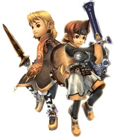

21 |
Profesiones |
 |
Los aventureros se pueden especializar en distintas "profesiones". Los aspirantes a aventureros se convierten en guerreros al ser autorizados como aventureros.
A medida que va avanzando el juego, aparecen mazmorras que requieren algo más que pura fuerza física para conquistarlas. Es un buen momento para pedir a algunos aventureros que cambien de profesión. Para cambiar de profesión es preciso que se haya edificado la estructura adecuada en el reino. Una vez hecho esto, puedes publicar una orden de cambio de profesión para reunir aventureros adecuados para la nueva profesión. A continuación, se exponen las cuatro profesiones y sus estructuras respectivas. |

● Warrior (Guerrero) |
(Mago blanco)
| |
 ● White Mage
● White Mage
(Mago negro) |
 ● Black Mage
● Black Mage  ● Thief (Ladrón)
● Thief (Ladrón)Como explorador y cazatesoros, el ladrón puede forzar la cerradura de esos fastidiosos cofres, y con su sigilo evita batallas innecesarias a los grupos. Para cambiar la profesión de un aventurero a ladrón hace falta una "Gaming Hall" (Sala de juego). |
Los aventureros que acudan a una orden de cambio de profesión te preguntarán si quieres que acepten el papel propuesto.
Ten en cuenta que al cambiar de profesión, el aventurero perderá cualquier capacidad adquirida en la profesión anterior. Sopesa tu elección cuidadosamente. |
 |
 |
 |